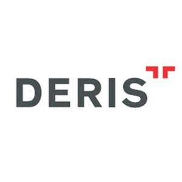

Trade Mark Journal No.2025/050 12 December 2025
WO0000001874255 (16,35,41,42,45)
Office of origin: Turkey
Date of International Registration:12 March 2025
Date of designation in the UK:
12 March 2025

The mark consists of the stylized word “DERIS” in dark gray letters, with a stylized red shape composed of two horizontal bars forming a “T”-like figure placed above the top-right portion of the word “DERIS.” The color white represents background or transparent areas and is not claimed as a feature of the mark.
- Class 16
- Printed matter; printed publications, newspaper, magazines, books, guides, stickers, postage stamps.
- Class 35
- Office functions: secretarial services, word- processing services, computer file management services, compilation of data to computer database, systemization of information in computer databases, consultancy services in business administration (business information), assistance services in commercial or industrial management, consultancy services in business administration and organization (restructuring), hotel management services, business evaluation, collection of business information, research services (of production processes and methods); business record keeping for accounting purposes.
- Class 41
- Education and training; arranging and conducting of symposiums, conferences, congresses and seminars; library services; publication of magazines, books, newspapers; translation services, interpreting services; publication and provision of electronic books, publications, online magazines and periodicals in the field of intellectual property; online publishing services of electronic books and magazines on industrial and intellectual property rights.
- Class 42
- Scientific and industrial analysis and research services for the purposes of registering, enforcing and defending intellectual property.
- Class 45
- Legal services, copyrights management, legal consultancy in the fields of intellectual and industrial property rights; consultancy services in the fields of trademark, patent and industrial designs and geographical names; agency/representation services relating to intellectual and industrial property rights; legal services on copyrights and consumer rights, licensing of intellectual property rights; dispute resolution, resolution of legal disputes through arbitration, mediation services, registration services of foreign companies in trade registry, legal consultancy services in the management and enforcement of intellectual property rights, legal consultancy in the registration of domain names, legal consultancy in the protection of new plant varieties legal consultancy for universities, research institutions and inventors, legal services regarding the preparation of contracts for settlements and intellectual property matters; paralegal services, patent licensing services, providing legal information on intellectual property rights and trademark tracking systems; providing information relating to the field of intellectual property through an online website; providing information on industrial and intellectual property rights through a website on a global computer network; providing information on industrial and intellectual property rights via online (non-downloadable) electronic publications.
DERİŞ PATENT VE MARKA ACENTALIĞI ANONİM ŞİRKETİ
Representative: DERİŞ PATENT VE MARKA ACENTALIĞI A.Ş., İnebolu Sokak No:5 Deriş Patent Binası, Kabataş/Setüstü, TR-34427 İstanbul, TURKEY